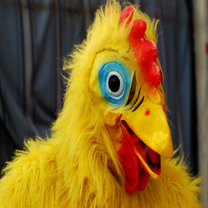

A.B.D.O.U
A.B.D.O.U
Taille : 1m70-80
Poids : Beaucoup trop de poulets
Description : Cette créature grotesque, à mi-chemin entre le poulet
et l'homme aurait été aperçue aux environs du 2ème étage de la wcs
(nous ne donnerons pas le nom entier par souci d'anonymat).
La rumeur court qu'il aurait été humain à la base, et que suite à sa
consommation excessive de viande blanche, il aurait attiré le
courroux du Chicken god qui l'aurait alors transformé en poulet.